100 Дневный воркаут
<==== Вернуться к оглавлению
День 61. Иммунитет организма (и как его можно повысить)
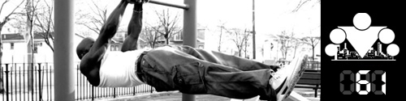
В сегодняшнем инфо-посте речь пойдет о довольно важной вещи, особенно в условиях, когда с каждым днем погода становится все холоднее, а вероятность заболеть все выше, да и тема здорового образа жизни и тренировок с ней очень тесно связана. Итак, сегодня речь пойдет об иммунитете. Так как мы не раз обращались за время 100-дневки к идеям ЗОЖ, излагаемым украинским блоггером
Олегом Терном
, то и в этот раз решили почерпнуть информацию в его ЖЖ, которая всегда понятна и доходчива и при этом отлично раскрывает суть вопроса. Итак, поехали!
Теория
Иммунитет - это способность нашего организма противостоять воздействию чужеродных антигенных агентов, и насколько хороша эта способность зависит напрямую от того, что мы с вами делаем или не делаем.
Справка
Антигенными свойствами на уровне молекул обладают в первую очередь белки и нуклеиновые кислоты, но кроме них полисахариды, липополисахариды, полипептиды, а также некоторые искусственные высокополимерные соединения. Нет ни одного организма, в состав которого не входили бы хотя бы несколько перечисленных молекул – даже вирусы состоят из белков и нуклеиновых кислот (а иногда и полисахаридов), поэтому эта защита работает «против всех».
Антигены, как отпечатки пальцев, и именно по ним иммунная система опознает «своих» и «чужих». Давайте разберемся, на что организм может отреагировать:
1) На перечисленные вещества сами по себе. Если в организм поступают чужеродные антигены, то он на них реагирует, обязательно реагирует, и это защищает его. В большинстве случаев заметить эти реакции невозможно, однако иногда они дают о себе знать.
2) На различные инфекционные агенты (вирусы, бактерии, грибки, простейшие, гельминты) и продукты их жизнедеятельности.
3) Чужеродные и опасные клетки, которые появились в собственном организме. Каждый день в каждом из нас образуются мутантные и опухолевые клетки, которые организм вполне эффективно уничтожает. Если призойдет сбой, то разовьется рак.
4) На фармпрепараты, продукты питания, косметику, одежду (!) и прочие окружающие нас вещи, с которыми наш организм может входить в контакт.
5) На некоторые виды пластика, металлов, покрытий, химических веществ.
6) На собственные органы и ткани. Такая нетерпимость к себе может возникнуть по разным причинам, и это состояние называется аутоиммунной патологией.
Так же нужно упомянуть о том, что наш иммунитет обладает "памятью", то есть способностью запоминать антигены, с которыми он сталкивается в жизни, чтобы при повторной встрече иметь возможность отреагировать быстрее и эффективнее. Однако стоит отметить, что некоторые антигены организм запомнить вообще не может, некоторые запоминает на несколько лет, а некоторые – практически на всю жизнь (что позволяет создавать прививки от некоторых болезней).
С этим связана еще одна особенность. На все вышеперечисленные вещества иммунитет при первом столкновении реагирует плохо, а уже при втором-третьем хорошо. Это нужно учитывать при аллергических реакциях – если в первый раз аллергия может проявится маленьким зудящим пятнышком, то уже во второй раз организм может отреагировать «по полной» - отеком Квинке или анафилактическим шоком. И по этой причине фраза «раньше у меня никогда не было аллергии на это вещество» - в том то и ее смысл, что раньше не было, а тут взяла и появилась, при втором или третьем контакте.
Практика
Давайте теперь пройдемся по методам, которые могут позволить вам болеть реже, и чувствовать себя лучше. Попробуем расположить их в виде «Хит-парада» важности, хотя это очень относительно, главное – это кумулятивный эффект, который возникнет, если соблюдать как можно больше пунктов из этого списка.
Питание
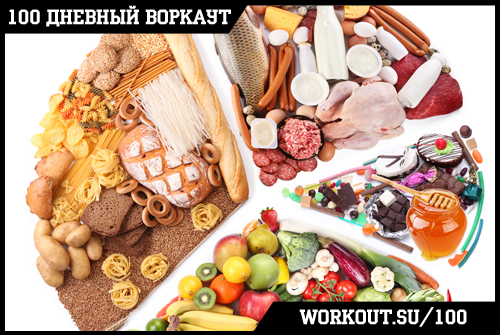
Первое о чем стоит задуматься, если рассуждать о глобальных проблемах с иммунитетом у нашего населения, а хорошо ли это население питается?
Иммунная система взрослого человека суммарно составляет примерно 1 кг. Огромную ее часть составляют клетки, которые постоянно делятся и обновляются, а это требует большого количества… нет, не витаминов – БЕЛКА! При его дефиците, особенно такой аминокислоты, как глутамин, не смогут нормально размножаться бесчисленные воины иммунной системы – лейкоциты, лимфоциты, эозинофилы, макроциты и т.д.
Кроме того, вся система биологической защиты – это одни сплошные белки. Может ли эта система существовать без адекватного питания, особенно в случае белкового дефицита? (подсказываю: не может).
Кроме белков, иммунная система, которая ежеминутно и ежечасно тяжело трудится, требует большого количества других питательных веществ и энергии: углеводов, полиненасыщенных жирных кислот и т.д. Отсюда первый враг иммунной системы: белково-калорийная недостаточность и нерациональное питание.
Уменьшение контакта с антигенами
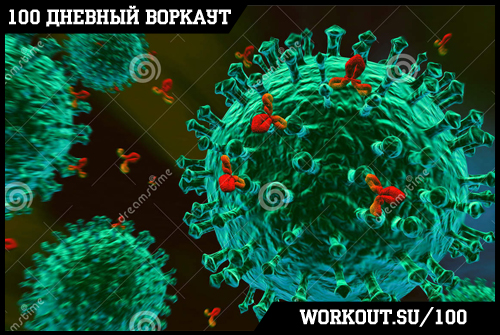
Постоянный контакт с антигенами рассредоточивает «внимание» иммунной системы. Кроме бактерий, вирусов и прочих «агрессоров» организму приходится каждый день контактировать с невероятным количеством других антигенов: это еда, одежда, фармацевтические препараты, духи, моющие средства и косметика, шерсть домашних животных – невероятное количество всего.
Нужно привить себе правильные гигиенические навыки, которые помогут вам уменьшить нагрузку на иммунную систему. Тут важно не впасть в паранойю и не пытаться жить в стерильных условиях, общаясь с миром через гипоалергенный скафандр – без некоторого уровня стимулирования иммунная система тоже начнет дряхлеть.
Очевидно, что нужно мыть руки, мыть тело, вовремя менять одежду, чистить уши и соблюдать прочие несложные гигиенические правила. Нужно санировать (вылечить) все возможные очаги хронической инфекции: кариозные зубы, воспалительные заболевания кожи, инфекции кишечника, грибок на ногах и ногтях и т.д. – все это снижает ваш иммунитет, т.к. он вынужден постоянно вести боевые действия там, где это не нужно. Так же желательно свести к минимуму контакт с больными.
Нужно следить за своей реакцией на продукты и прочие аллергены, избегая контакта с ними. Если у вас аллергия на домашнее животное, и при этом вы постоянно болеете простудными заболеваниями, то пока оно живет у вас дома, хоть объешьтесь чеснока до состояния корейской морковки, болеть вы не перестанете.
Контроль веса
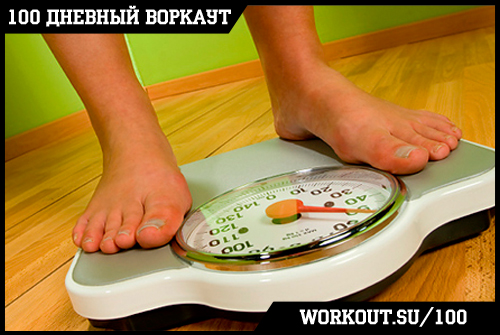
Как избыточный, так и недостаточный вес показывают закономерное негативное влияние на состояние иммунной системы. Люди с ожирением имеют повышенный риск инфекционных заболеваний, заражения крови, различных кожных болезней, у них плохо заживают раны. Резкая потеря массы тела, а также ее постоянный дефицит – также риск осложнений со стороны иммунной системы.
Закаливание и прочие оздоровительные процедуры
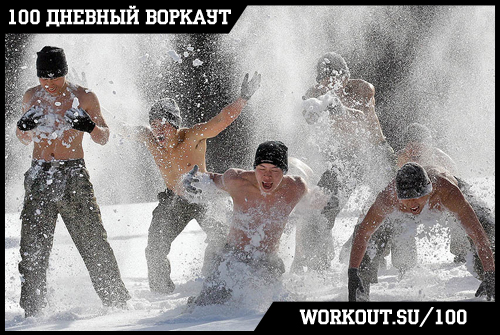
Закаливание – это стресс. Любой стресс заставляет ваш организм «выйти из себя», ощутить угрозу своему благополучию. Любой живой организм при этом начинает подстраиваться – расширять границы своих возможностей и резервов.
Однако стоит учитывать, что если вы резко и слишком сильно нанесете стресс организму, то произойдет подавление всех защитных систем. То же самое происходит, когда стресс хронический, и организм не имеет времени, чтобы к нему приспособиться (не важно, психологический это стресс, или постоянный холод). Включаются механизмы саморегуляции, которые перестраивают все системы организма в новый формат работы – при этом нередко организм вспоминает про давние болячки.
Физическая активность
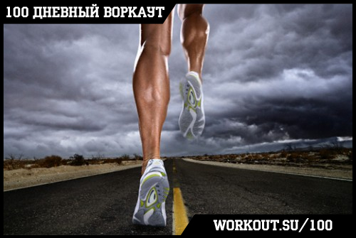
Занятия спортом стимулируют иммунитет и сопротивляемость организма примерно по тому же механизму, что и закаливание, плюс ряд физиологических эффектов: улучшается работа сердечно-сосудистой системы, что лучше «гоняет кровь» (как вы помните, это важно для работы иммунитета), происходит гормональная саморегуляция, метаболическая активность растет, лучше опорожняется кишечник и уменьшаются всякие патологические процессы в нем – и т.д. и т.п., всех эффектов не перечесть.
Следует учитывать, что большИе и тем более запредельные физические нагрузки снижают иммунитет, поэтому если планируете выложиться на тренировке до потери пульса, постарайтесь не переохлаждаться и обеспечить себя повышенным питанием, в том числе белками и углеводами после тренировки.
Здоровый сон
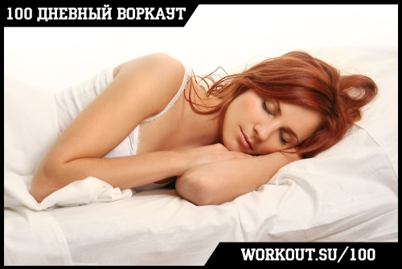
Мы уже писали об этом в отдельном инфо-посте, но все же хотим повториться и напомнить, что полноценный здоровый сон очень важен для поддержания высокого уровня иммунитета, в то время как различного рода недосыпы и невысыпания являются стрессом для организма и отрицательно сказываются на нем.
Психологический комфорт
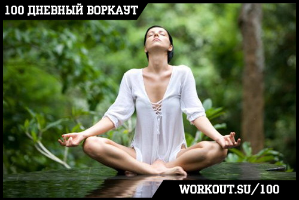
Психологические стрессы достоверно снижают иммунитет, а также приводят к разбалансированию всех систем организма и нарушению их работы. Так что позаботьтесь, чтобы ноги были в тепле, а голова в холоде (в данной поговорке холод имеется в виду в переносном смысле).
Все, что повышает настроение – музыка, чтение книг, юмор, позитивное восприятие жизни, также повышает ваш иммунитет.
Лук, чеснок и прочие фитонциды
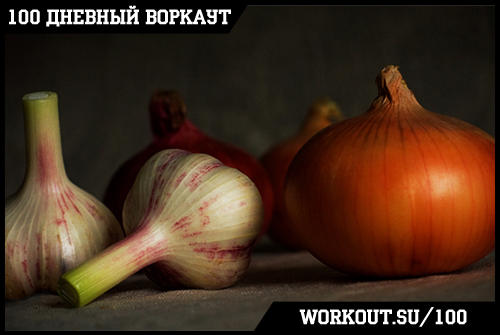
Данное народное средство можно отнести к действенным. Не знаю, что играет бОльшую роль – фитонциды, которые убивают бактерии, или биологически активные вещества, которые воздействуют на организм, но время от времени употребляя их в пищу, вы улучшите работу своей иммунной системы. Только не забывайте, что несвежее дыхание крайне негативно сказывается на понимании.
Аптечные средства
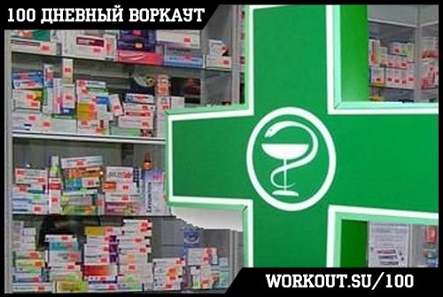
Если говорить о различных растительных иммуномодуляторах, то я оцениваю их эффективность как не слишком высокую. Любые другие иммуномодуляторы и стимуляторы – только по показаниям и после консультации грамотного врача.
Поездки летом на море
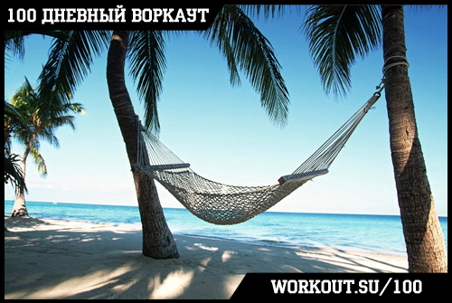
Курортная терапия, особенно на море (соленый воздух) имеет крайне благотворное влияние на весь организм, в том числе на иммунную систему (но не для всех, некоторым людям нужно подобрать другой вид отдыха). Учитывайте, что эффект наступает только при пребывании на курорте в течение минимум 2 недель (примерно 7-10 дней длится акклиматизация), а лучше 3-4 недели подряд.
Если же выбраться на море нет возможности, то достаньте недорогую путевку на базу отдыха в хвойном лесу, на берегу речки (умеренное пребывание на солнце также играет большую роль) или еще куда, отдых в течение 2-3 недель 1-2 раза в год очень хорошо сказывается на здоровье.
Прочее
Все, что вы вспомните (при условии соблюдения хотя бы первых 4-х пунктов), если объединить вместе, по силе эффекта можно приравнять к одному пункту.
Все эти йогурты-уйогурты, лактобактерии (без особых на то показаний), соки нони, витамины в капсулах и таблетках, солевые лампы и серебряные шары, эвкалиптовые свечи и живая вода – все вместе они могут внести в копилку вашего здоровья максимум один взнос.
Повторяю: если все все все их собрать воедино, то вряд ли они окажутся такими же эффективными, как одно полноценное рациональное питание.
Стоит ли тратиться на это все, если есть простые, проверенные способы, комбинация которых даст вам максимум того, что можно получить? Решать вам.
P.S.
Будьте благоразумны. Все описанное гарантировано подходит для здоровых людей, хотя и для большинства больных подходит не в меньшей степени. Но если вам 60 лет, у вас ожирение, стенокардия и гипертония, и вы, прочитав мой текст, резко начнете худеть, бегать, пить лимонник, погружаться в ванную и объедаться луком, то вас скорее кондратий хватит, нежели вы добьетесь укрепления иммунитета.
======> День 62. Судороги мышц